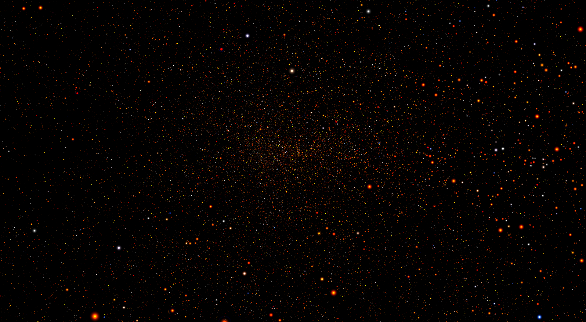
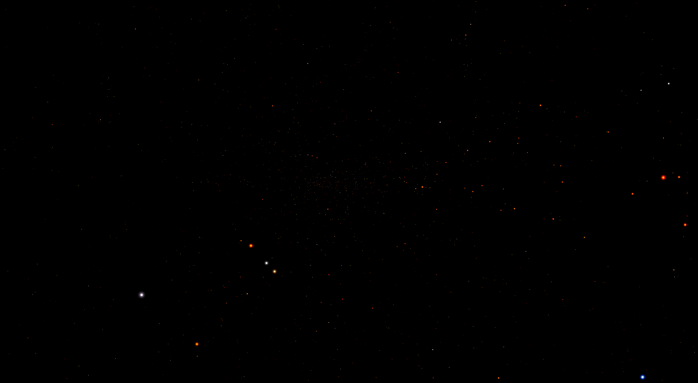
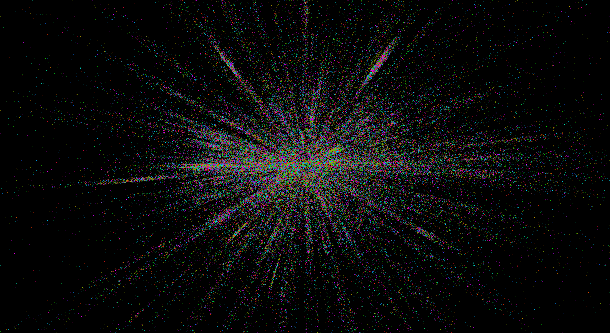
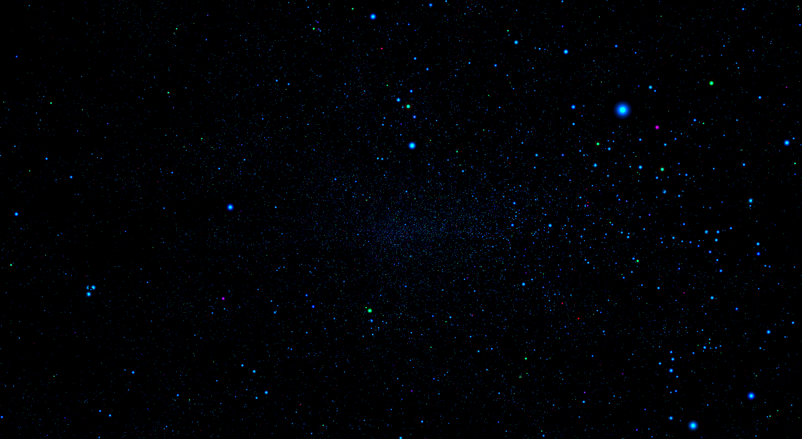
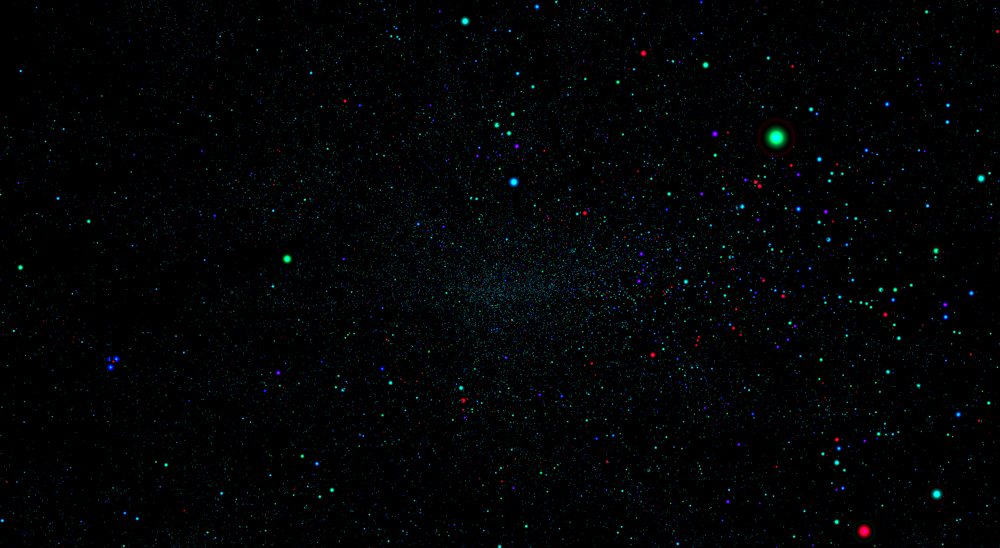

Table of Contents
Run executable
Starting from the root directory of the program, go to sidera/os/bin and run the sidera executable file.
- Windows #starting from root repocd sidera/windows/binstart sidera.exe
- Linux #starting from root repocd sidera/linux/bin./sidera

Camera properties and text-based interface
You can move around the 3d universe using the WASD keys. To set the camera speed, press the keys from 1 to 5. To change the fov angle (in radians), use the Z (increse) and X keys. To save current the camera properties (position, rotation, fov, etc.) press LEFT_CTRL + F. To load the last saved camera interface, press LEFT_CTRL + L.
You can read the camera properties in real time by opening the sidera/interface.smd file with your favourite text editor:
The camera position is in parsecs (pc).
Edit source settings
Editing the gaia universe model source settings means reading new data and different celestial body properties. Open the settings file located at sidera/smd/settings.smd file (for more information about the smd file format, visit the smd repository).
Change number of celestial bodies
You can increase or decrease the number of celestial bodies to read, and the amount of data to render on the screen. You can achieve this by changing one variable in the settings.smd file:
Save the file and refresh the application source settings with LEFT_CTRL + R (R stands for reload).

x: right ascension; y: declination; z: barycentric distance; view mode: polar; color filter: teff; shade type: animated; 30 million celestial bodies

x: right ascension; y: declination; z: barycentric distance; view mode: polar; color filter: teff; shade type: animated; 1 million celestial bodies
Customize xyz parameters
You can submit to the GPU at maximum three default celestial body parameters, which will be then plotted in the 3d environment. By default, the celestial body right ascension, declination and barycentric distance will be respectively set at x, y, and z parameters.
You can setup the celestial body xyz parameters through the settings.smd file.
To change the mode data is projected in the 3d world, see the `set-view-mode` chapter.
Save the file and refresh the application source settings with LEFT_CTRL + R.
Customize color filter
The color filter of a celestial body is an extra parameter submitted to the GPU, which affects the color of each celestial body depending on its value. Higher values will increase the green and blue channels of the celestial body color. Here you can find the supported color filter parameters:
Save the file and refresh the application source settings with LEFT_CTRL + R.

x: right ascension; y: declination; z: barycentric distance; view mode: polar; color filter: logg; shade type: pixel

x: right ascension; y: declination; z: barycentric distance; view mode: polar; color filter: radius; shade type: pixel

x: right ascension; y: declination; z: barycentric distance; view mode: polar; color filter: random color; shade type: pixel
Edit graphics settings
When you change the gaia universe model graphics settings you are not reading new celestial bodies parameters, but you're only changing the way the same data appears on the screen. Open the settings file located at sidera/smd/settings.smd file (for more information about the smd file format, visit the smd repository).
Set view mode
A polar projection mode is optimal when reading right ascension, declination and barycentric distance as xyz parameters. This way what you see on the screen is actually the true representation of the night sky. Plotting data on a cartesian diagram allows finding out some correlation between the xyz celestial body parameters:
Save the file and refresh the application graphics settings with LEFT_CTRL + G (G stands for graphics).

x: age; y: mass; z: feh; view mode: cartesian; color filter: feh; shade type: pixel. As you can see, there is a correlation between a star's mass, age, and abundance of Fe particles, and only some combinations of parameters are possible (there are colorful and dark regions)
Change shading mode
This is pure aestetics. Stars can be represented as dots (pixels), circles, clouds, or animated clouds:
Save the file and refresh the application graphics settings with LEFT_CTRL + G.

x: right ascension; y: declination; z: barycentric distance; view mode: polar; color filter: logg; shade type: animated

x: right ascension; y: declination; z: barycentric distance; view mode: polar; color filter: age; shade type: animated